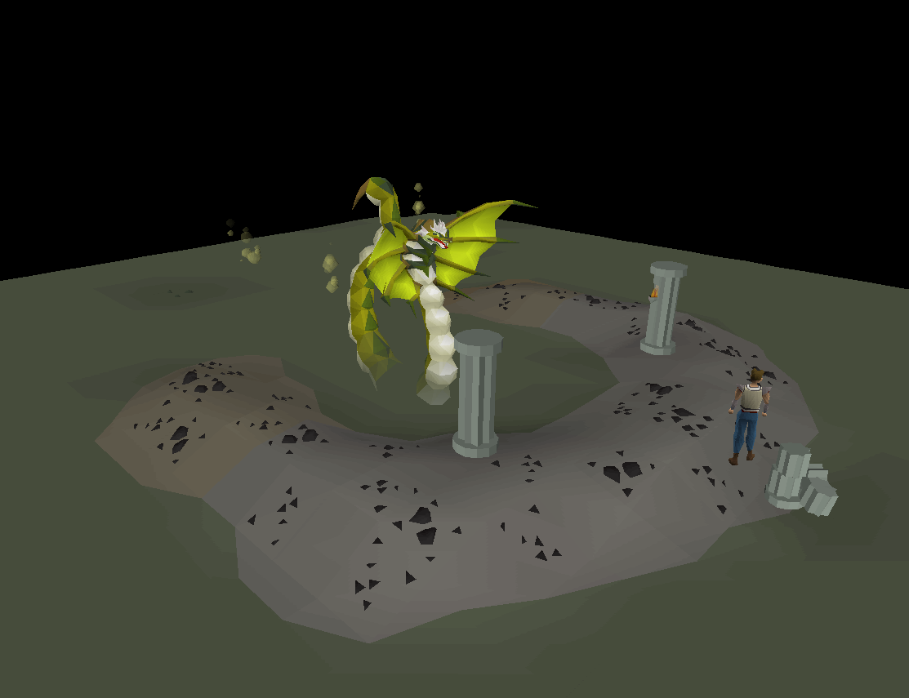

<section>
  <div class="grid text-media">
    <div class="left bg-pink flex-column">
      <h2>Conclusions</h2>

      <p class="fragment">In summary, there are certain factors quantifiable factor which determine the price, like supply and demand. However,
        the biggest factor is how players feel about a certain item after an event. This can be influenced by players communicating
        to each other and how the game developers communicate with their player base or how they do not.</p>

      <h2 class="fragment">Datasets</h2>

      <div class="fragment">
        <h3>OSbuddy</h3>
        <p>OSBuddy is a third-party RuneScape client which has a lot of added features compared to the official client. OSBuddy
          tracks the prices at which players sell items and has an API which has been used to gather the buying- and selling
          price together with the demand of supply of items.</p>
      </div>

      <div class="fragment">
        <h3>RuneScape</h3>
        <p>The RuneScape website is the single source of truth concerning (breaking) updates to the game. It also has a price-checker
          function which can ratify OSBuddy's price data.</p>
      </div>
    </div>

    <div class="right">
      
    </div>
  </div>
</section>
